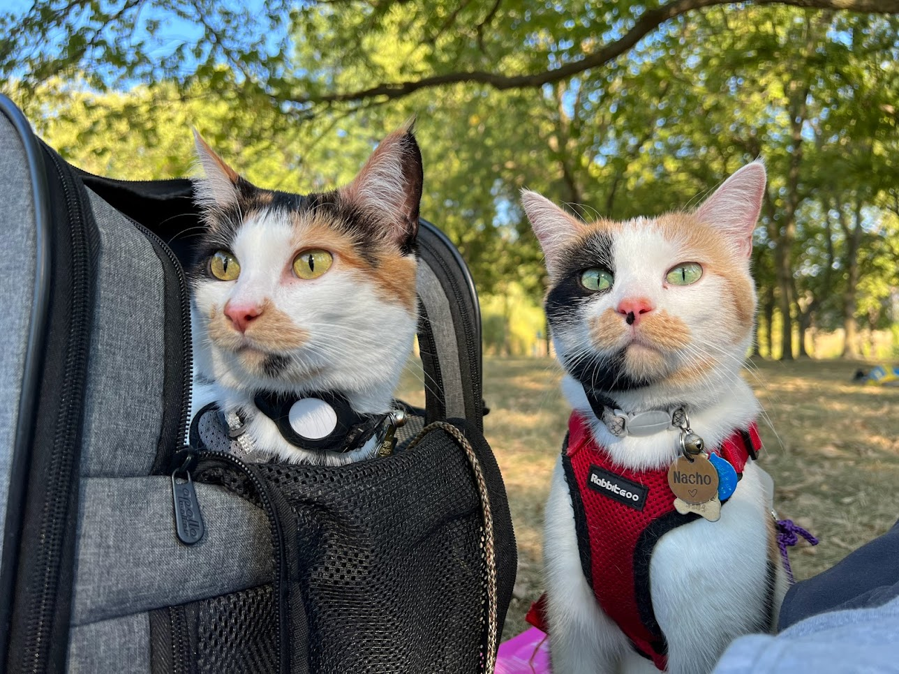

CODE + DATA = ME
I am a seasoned techie with a passion for data and technology.
My expertise lies at the intersection of data analysis, visualization, and software development, where I leverage my skills to create impactful solutions that drive informed decision-making.
I thrive on the challenge of transforming complex data into actionable insights, and I am dedicated to fostering collaboration across academia through my work in learning analytics.
My journey has been shaped by a diverse range of experiences, from developing transformative software solutions in the insurance industry to mentoring and guiding students as a teaching assistant during my grad school.
I have a Master's degree in Computer Science from the University of Nebraska-Lincoln, where I honed my skills in data analysis and software development.
I have also contributed to research publications, showcasing my commitment to advancing knowledge in the field.
I am committed to continuous learning and growth, always seeking new opportunities to expand my knowledge and skills in the ever-evolving field of data and AI.
My Journey
Sep 2019 - Present
Learning Analyst @ University of Nebraska System- Drove data-driven decisions by modeling student performance and behavior related data marts and dashboards across 10+ projects.
- Pioneered the "Course Insights" LTI product as the primary analyst from concept to launch.
- Recognized with the highest performance rating ("Exceeds Expectations") during the evaluation term (Feb 2022-Feb 2023).
- Facilitated cross-institutional collaboration through regular presentations to NU System, BTAA, and Unizin peers.
- Tableau
- R programming
- Python
- SQL
- Statistics
- Gitlab
- Data Engineering
Apr 2017 - Sep 2019
Software Engineer @ ReSource Pro- Key developer in 5+ projects creating transformative software solutions that automated commercial insurance processes (new business, renewals, account management), saving 70-90% of time for account managers and service representatives.
- Facilitated seamless collaboration by effectively bridging communication between US-based stakeholders and overseas development teams in Bangalore, India.
- Mentored a Junior UI Developern in Bangalore, India; providing technical guidance that enhanced the quality of front-end design across multiple projects.
- ASP.Net Mvc 5
- C#
- HTML
- CSS
- Bootstrap
- javascript
- jquery
- SQL
- Salesforce Dev
- Azure ML
- Bitbucket
Jan 2016 - Dec 2017
Teaching Assistant @ School of Computing, University of Nebraska-Lincoln- Provided consistent guidance by holding regular office hours, assisting students with assignments and projects.
- Collaborated with faculty on developing and grading course materials, from lectures to exams.
- Spring 2016: CSCE 913
- Spring 2016: CSCE 430/830
- Fall 2016: CSCE 413/813
- Fall 2016: CSCE 470/870
Jun 2015 - Dec 2015
Software Engineer Intern @ DataBankIMX- Rapidly acquired web development proficiency, delivering 2 responsive, engaging full-stack web portals for electronic document management for local clients.
- ASP.Net Mvc 5
- C#
- HTML
- CSS
- Bootstrap
- SQL
Sep 2014 - May 2015
Data Analyst-Student Worker @ Dept. of CYFS, University of Nebraska-Lincoln- Managed and analyzed assessment data from the GoNapSacc website for a departmental research project, performing comprehensive data cleaning, pre-processing, and statistical analysis.
- IBM-SPSS
- MS EXCEL
Publications
Conference Paper J.Ramanan, P.Z.Revesz, Mutations of Adjacent Amino Acid Pairs are not Always Independent
INASE Conference, Crete Island, Greece, October 17-19, 2015
Journal Paper J.Ramanan, P.Z.Revesz, Testing the independence hypothesis of accepted mutations of adjacent amino acids in protein sequences
International Journal of Biology and Biomedical Engineering, 11, 170-179, 2017
Masters' Thesis J.Ramanan Testing the independence hypothesis of accepted mutations of adjacent amino acids in protein sequences
Advisor: Dr. Peter Z. Revesz, University of Nebraska-Lincoln, 2017
My Work
Connecting Genomic Data to Phenotypic Expression in Maize
This is a capstone group project for the Data Mining course CSCE 874 at UNL. Team consisted 4 members. My contribution in this project lies in data shaping using techniques like binarization, and discretization. Then I used association rule mining to predict maize yield by connecting maize's phenotypic characters such as cob length, mass, ear length, etc., and the available gene expressions.
- Python
- Machine Learning
- Data Mining
- Association Rule Mining
GPT4AL
Yama Connector is a customized LLM using GPT 4-o model, and Streamlit for the UI. It exists to help new vegans and vegan curious people understand what veganism is, and to debunk myths around the ethics and philosophy of veganism, and plant-based diets for all.
- Python
- Streamlit
- OPENAI API
- LLM
- VEGANISM
CODE != ALL
Professionally, I love exploring data and crafting insightful data-driven dashboards for people.
My values drive me to advocate for animal rights, environment, and climate action, cultivate a healthy and fit lifestyle, and make conscious choices that promote kindness and well-being.
I approach my passions with unwavering conviction, constantly seeking to learn and grow in these areas.
WHAT MATTERSTHE MOST..
I'm a bit of a renaissance soul with varied interests. In my personal time, I'm always up for
- ☕ a cup of caffeine
- 📖 a good book
- 🏃🏻a scenic run/hike
- 🏋️♀️ an energetic strength session
- 🧘🏻♀️ some mindful yoga
- 🐱 chilling outdoors with my feline friends (Coco & Nacho)
- 🍲 whipping up flavorful food in the kitchen
